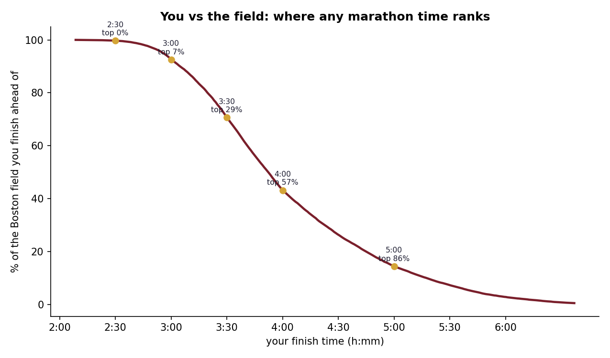

Start · the question
Two questions on one axis
Runners ask where their time sits. Fans ask how fast the record really is. Both usually get answered with adjectives. On a single time axis they become the same question: your time is one point on the curve, and the record is another point a long way to the left.
The curve comes from the 2014 Boston Marathon, pulled from the public llimllib/bostonmarathon mirror. I kept runners only (no wheelchair or handcycle entries) with times between 2 and 7 hours, which leaves 31,842 finishers.
Body · log-normal fit
A marathon field is log-normal
A shifted log-normal, with its floor set at 118 minutes, tracks the histogram closely. The median is 3:52. The slow tail pulls the mean to 4:03, with a standard deviation of 51 minutes. A runner can finish hours behind the middle of the field but the winner was only 1:43 ahead of it.
The record does not sit at the fast end of this curve. It sits to the left of it: no finisher ran faster than 2:00:35, and the winner was more than eight minutes slower.

Tail · Peaks-Over-Threshold
The fast tail has a finite end
Generalized Pareto shape, fitted to the 1,593 finishers under 2:56.
The body fit says little about the extreme fast end, so the tail gets a model of its own. I set the threshold at the fastest 5% of the field (2:56), measured how far each of those 1,593 runners beat it, and fitted a generalized Pareto distribution to those gaps. The shape parameter is −0.147.
A negative shape means the distribution is bounded: fast performances stop at some point instead of thinning out forever. Peaks-Over-Threshold is good at telling whether such a bound exists and poor at saying where it is, so I report the shape and not an estimated fastest possible time.

Lookup · your race
A pace band for the whole field
The last output is a lookup from finish time to place in the field.
Each cell below gives the share of the 31,842 finishers that time beats,
and how much slower it is than the record. The numbers are
tables/you_vs_goat.csv.
Each cell: finish time, the share of the field finishing behind it, and how much longer it takes than the 2:00:35 record. A 4:00 marathon takes almost exactly twice as long.

Limits · one field, one year
What this doesn't show
Boston is a qualifying race. Almost everyone in this field had to run a qualifying time to enter, so the curve sits faster than a general-entry marathon would. When the band says a 3:00 is ahead of 92.6%, it means ahead of this field. A slower field would push the record further out.
It is one race in one year. The field is Boston 2014 only; 2013 is left out because that race was stopped partway through.
I don't give the record's rarity as "1 in N". That needs the fitted density far past the last data point, so the record is described by what was observed: faster than all 31,842 finishers and 2.4 standard deviations below the mean.
The record used is Kelvin Kiptum's 2:00:35 (Chicago, 2023), the value set
in analyze.py. A faster record would move that one mark and
none of the field statistics.
Finish · how it was built
Where the numbers come from
- Data
- Boston 2014 official results from the llimllib/bostonmarathon mirror, runners only, 2:00 to 7:00
- Sample
- 31,842 finishers
- Body fit
- Shifted log-normal (floor 118 min),
scipy.stats.lognorm - Tail fit
- Peaks-Over-Threshold, generalized Pareto on the fastest 5% (
scipy.stats.genpareto) - Reported
- Tail shape ξ only; no endpoint estimate
- Built with
- Python, pandas, NumPy, SciPy, matplotlib